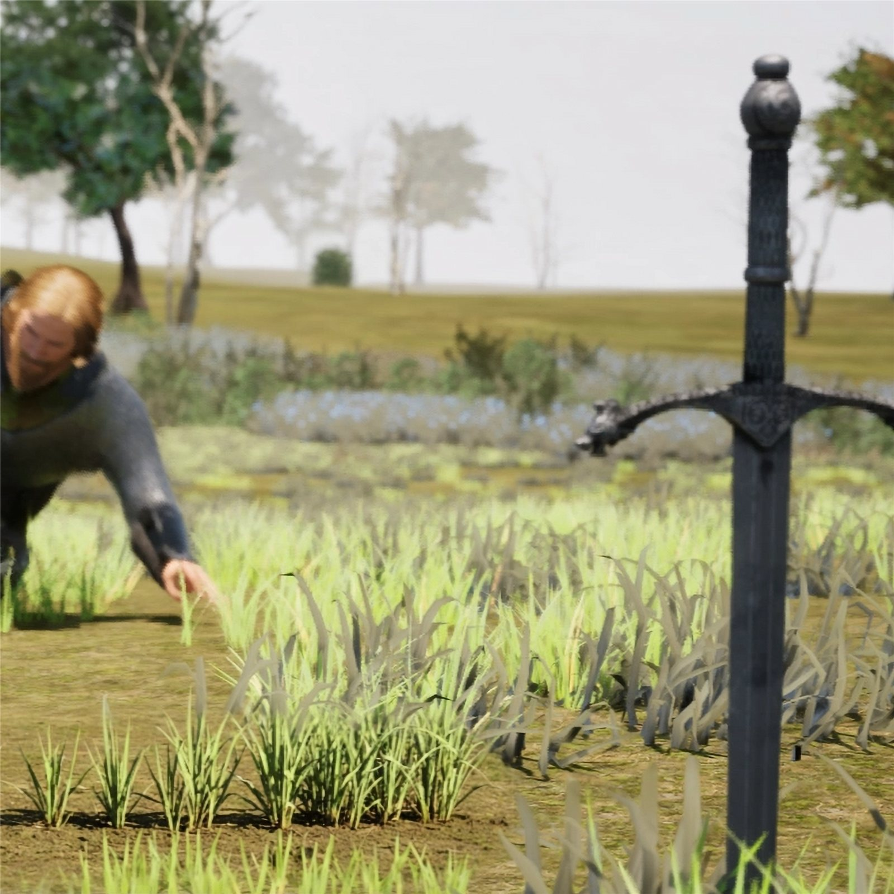
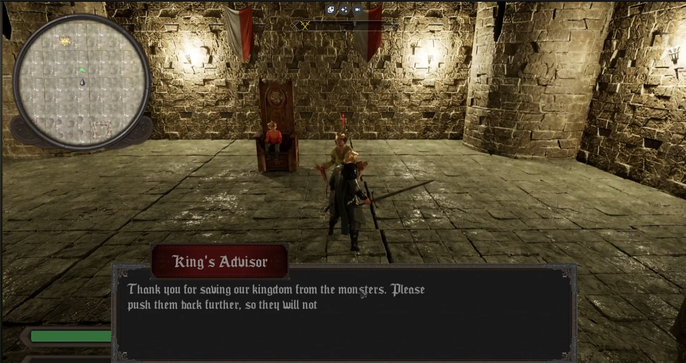
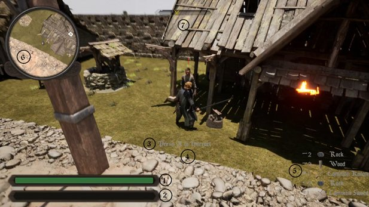
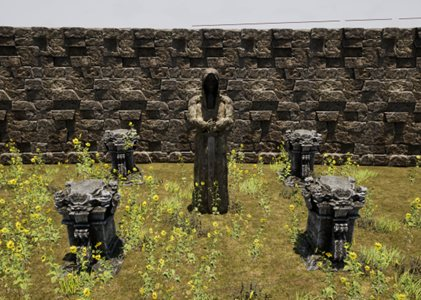

Unreal Engine · Combat Designer & Gameplay Programmer
Knights Resurrection
An open world fantasy RPG where you play as Iraemyr, a farmer enlisted to fight for the last free kingdom against a corrupt prince who bends the world to his will with dark magic. My teammate and I built it in two months for our Game Design module — a full narrative experience with a three-act story and a unique combat system.

Main Features
A complete RPG systems stack, built in two months.
- Match-the-input combat system with unique weapon combos
- Three-tier weapon rarities
- 'Rage Mode' ability
- Open world with foliage biomes
- Dynamic music that changes across areas of the map
- Three enemy types with advanced AI using a token system and the Environment Query System
- Inventory system
- Resources and upgrade materials
- Quest system
- Blacksmith weapon upgrades
- NPCs with side quests and rewards
- Procedural roads
- Full HUD with minimap and compass
Design
The game is set in a fantasy medieval world inspired by real and fictional castle architecture, spread across three kingdoms. It uses high-fidelity assets and realistic damage effects to ground the fantasy.
Inspired by the Elder Scrolls series and Kingdom Come: Deliverance. Keyboard-only by design — the match-the-input combat is built around it — and targeting Windows due to the need for a powerful graphics card.
Development Challenges
Keeping an open world performant was the biggest challenge: we used PCG to optimise world building and solved foliage rendering costs with dedicated rendering techniques.
We also integrated MetaHumans for characters, which meant building an animation retargeting approach so our combat and locomotion animations worked across every character rig.
Gameplay Loop
- Start the main quest
- Defeat enemies and complete the quest
- Collect rewards and gather resources
- Receive the next quest and explore the world
- Do side quests and upgrade your weapons
Gallery


